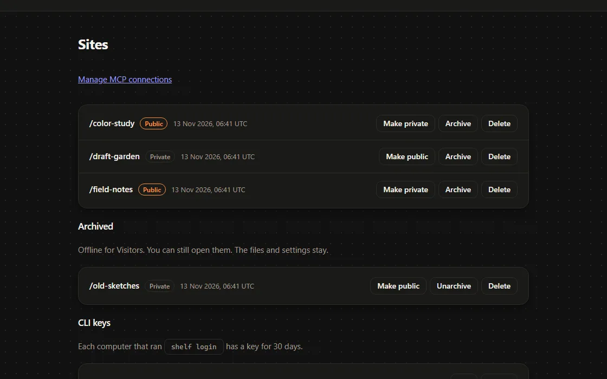

Shelf
A small self-hosted home for static files
A small, self-hosted place for static files. One command puts a folder online at a path. The Owner decides which sites are public.
- DateOctober to November 2026
- RoleSolo: design and code
- StatusLive at files.ajitha.fyi
- Runs asOne Go process, one SQLite file, one Docker image
- Built withGo, SQLite, Rust CLI, Docker, MCP
About this project
One command to upload
shelf upload ./notes notes puts a folder online. Before the upload, the CLI finds broken links and secrets.
Public, private or archived
A new site is private. Make it public to show it on the Index page. Archive takes it offline and keeps the files.
A key for each computer
The CLI logs in through the browser, like gh auth login. You can cancel each key from the Admin page.
Screens use demo sites and a demo Owner.